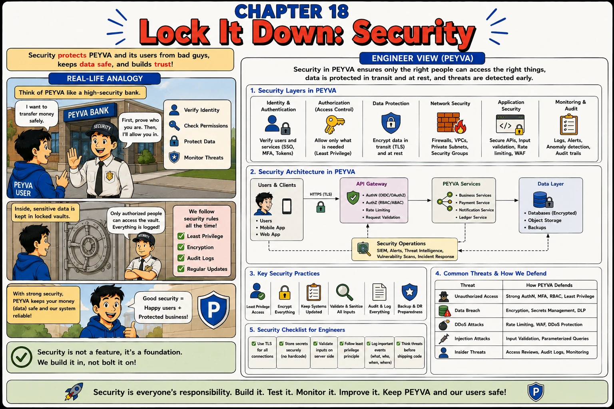

Chapter 18
Lock It Down: Security
Security protects peyva and its users from attackers, keeps data safe, and builds trust.

1. Intuition
- Everything peyva does so far assumes every caller is honestly Alice or Bob.
- A real bank verifies who you are, checks what you're allowed to do, and logs everything.
- Security applies that same discipline: prove identity, limit access, protect data, watch for trouble.
2. Concepts
- AuthN (Authentication). Verifying who someone is. Proving Alice is really Alice.
- AuthZ (Authorization). Checking what an authenticated user is allowed to do, least privilege by default.
- Encryption in Transit. Protecting data as it travels over the network (TLS), so it can't be read if intercepted.
- Secrets Management. Storing credentials and keys securely, never hardcoded in source code.
3. Under the Hood
- Users -> an encrypted connection -> the Gateway, which checks who is calling, what they are allowed to do, and how often they may ask -> the Teller -> stored data, itself encrypted and backed up.
- Both checks run before the Teller is called, so a request that fails either one never reaches a balance.
- Credentials live outside the code, in the environment or a secrets store, so a copy of the repository is never a copy of the keys.
4. Build It Hands-on Building in Go, change in Chapter 0
- The Gateway learns to prove who's calling before the Teller sees a payment.
Chain-of-Verification (CoVe). Draft an answer, plan the questions that would catch it being wrong, answer those independently, then revise. Asking for secure code gets you the checklist; verifying your own draft finds the holes the checklist doesn't mention.
Documented in The Prompt Report: Self-Criticism, Chain-of-Verification
Build this in Go, using its standard library.
Continue the same codebase you built in earlier chapters.
The Gateway trusts the "from" field on a payment request completely. Any caller can move money out of any account.
Work in four passes and show me each one.
1. Draft. Make the Gateway prove who the caller is, and confirm they own the account they're spending from before the Teller ever sees the request. Move any credential out of source code into an environment variable.
2. Plan the checks. Write the list of questions that would expose your draft as broken. Be specific to this system: no generic OWASP categories.
3. Answer them. Take each question against the code you actually wrote, one at a time, and don't soften an answer because of what you concluded on another.
4. Revise. Fix what the answers exposed, then state plainly what is still exploitable, including anything you left out of scope on purpose.
Done when a request with no credential is refused, a caller authenticated as one owner spending from another's account is refused, no credential is left in source, and I have your list of what remains exploitable.
5. Break It Test it
- Try to misuse peyva the way an attacker would.
- Send a /transfer request with no auth token. Confirm it's rejected with 401, not silently processed.
- Authenticate as Alice but set 'from' to Bob's account. Confirm it's rejected with 403, proving authentication alone isn't authorization.
- Search the codebase for any hardcoded credentials. There should be none by the end of this chapter.
Quick tip: Authentication proves who's calling; authorization checks what they're allowed to do. You need both.